Cursors
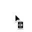
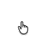
cursor keywordsHover a row to preview that cursor in your browser. Example images are from the MDN cursor docs.
| Category | Keyword | Example | Description |
|---|---|---|---|
| General | auto |
The UA will determine the cursor to display based on the current
context. E.g., equivalent to text when hovering text.
|
|
default |
The platform-dependent default cursor. Typically an arrow. | ||
none |
No cursor is rendered. | ||
| Links & status | context-menu |
A context menu is available. | |
help |
Help information is available. | ||
pointer |
The cursor is a pointer that indicates a link. Typically an image of a pointing hand. | ||
progress |
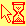 |
The program is busy in the background, but the user can still interact
with the interface (in contrast to wait).
|
|
wait |
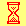 |
The program is busy, and the user can't interact with the interface
(in contrast to progress). Sometimes an image of an
hourglass or a watch.
|
|
| Selection | cell |
The table cell or set of cells can be selected. | |
crosshair |
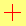 |
Cross cursor, often used to indicate selection in a bitmap. | |
text |
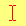 |
The text can be selected. Typically the shape of an I-beam. | |
vertical-text |
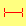 |
The vertical text can be selected. Typically the shape of a sideways I-beam. | |
| Drag & drop | alias |
An alias or shortcut is to be created. | |
copy |
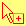 |
Something is to be copied. | |
move |
Something is to be moved. | ||
no-drop |
An item may not be dropped at the current location. On Windows and
macOS, no-drop is often the same as
not-allowed.
|
||
not-allowed |
The requested action will not be carried out. | ||
grab |
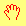 |
Something can be grabbed (dragged to be moved). | |
grabbing |
Something is being grabbed (dragged to be moved). | ||
| Resizing & scrolling | all-scroll |
Something can be scrolled in any direction (panned). On Windows,
all-scroll is often the same as move.
|
|
col-resize |
The item/column can be resized horizontally. Often rendered as arrows pointing left and right with a vertical bar separating them. | ||
row-resize |
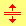 |
The item/row can be resized vertically. Often rendered as arrows pointing up and down with a horizontal bar separating them. | |
n-resize |
Some edge is to be moved. For example, the
se-resize cursor is used when the movement starts from
the south-east corner of the box. In some environments, an equivalent
bidirectional resize cursor is shown. For example,
n-resize and s-resize are the same as
ns-resize.
|
||
e-resize |
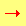 |
||
s-resize |
|||
w-resize |
|||
ne-resize |
|||
nw-resize |
|||
se-resize |
|||
sw-resize |
|||
ew-resize |
Bidirectional resize cursor. | ||
ns-resize |
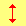 |
||
nesw-resize |
|||
nwse-resize |
|||
| Zooming | zoom-in |
Something can be zoomed (magnified) in or out. | |
zoom-out |